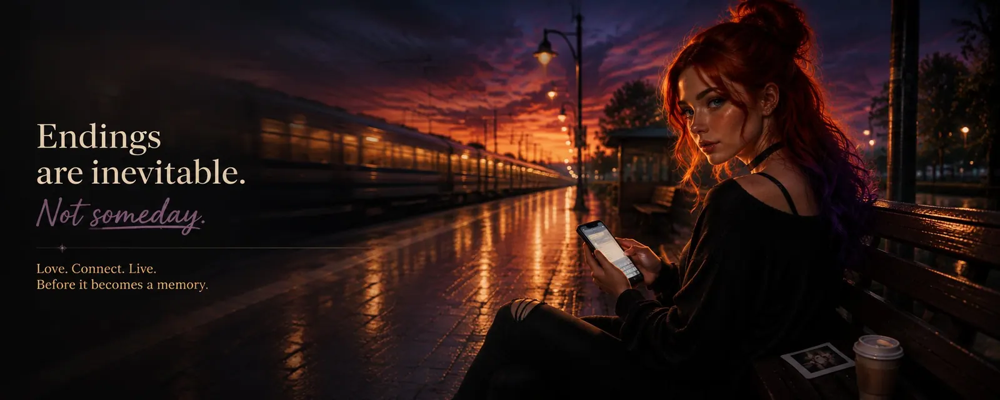
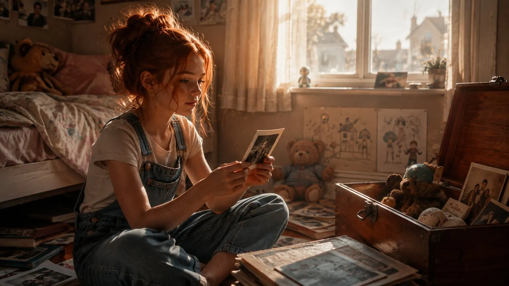
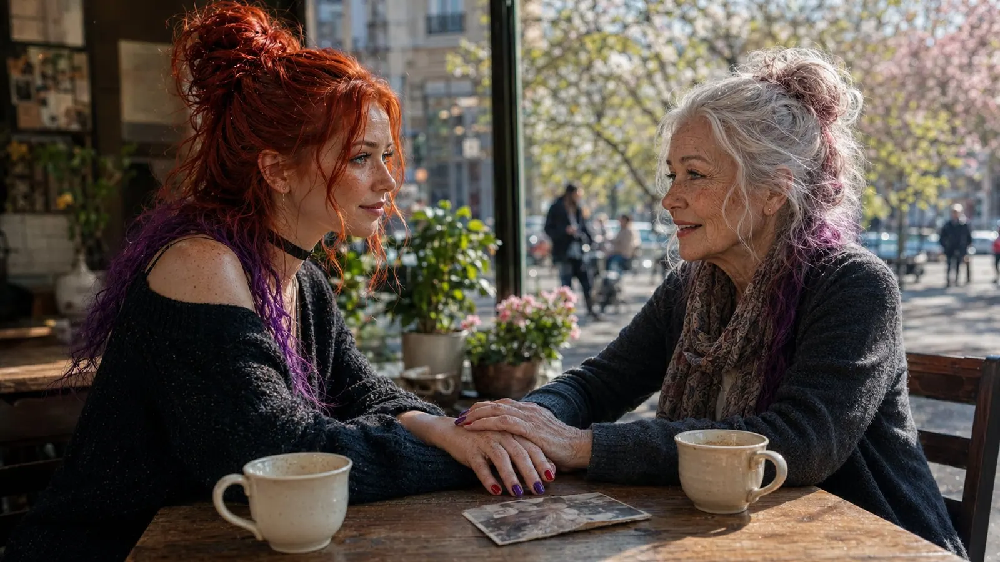

Endings
When I was a child, the world seemed static to me. Not literally, obviously, but in my head things simply were, and would always stay that way. My grandparents were my grandparents, my friends were my friends, my home was my home. Everything had its place. Everything would still look the same tomorrow.
I also believed, incidentally, that the world in the 1950s must genuinely have been black and white, since every photograph from that era was. Nobody had got around to inventing colour yet. I seriously wondered how exhausting it must have been to get dressed back then, when your only choice in the morning was light or dark. Hey, I was a kid.
Maybe that idea is simply part of being a child. You make friends without ever considering that those friendships might end one day. Why would you? The person you spend every afternoon with will obviously still be around in twenty years. That's how it works in all those lovely Hollywood films, where friends grow up together, see each other through every high and low, and eventually sit side by side as old people, laughing themselves stupid over the same idiotic stories they always did.
Except life mostly doesn't work like that.

At some point you start to understand that the world isn't static at all. In fact everything is permanently in motion. People change, interests shift, priorities appear and disappear again. Children turn into adults. One starts university, another moves to a different city for work, someone starts a family, someone finds new friends, new passions, or simply a different life.
Usually there isn't even a single dramatic moment when a friendship ends. Nobody slams a door. Nobody says, "Right, that's us finished." You just see each other a bit less often. You still write, but shorter. The phone call you used to make for no reason at all suddenly needs one. You make plans, but for three weeks out, then something comes up, and it never gets rescheduled. At some point you notice months have passed. Later, years. And if someone asked whether you were friends, you'd still say yes. A proper ending would require somebody to make a decision, and nobody does.
And suddenly a person you once knew almost everything about has become someone whose life you know almost nothing about.
With love it's no different. You can meet someone and love them so much that the idea of ever being without them seems completely absurd. Of course this will last forever. Of course we'll still look at each other in thirty years the way we do today. Maybe that's even true. Some people get that lucky. But sometimes weeks pass, or months, or years, and two people who once told each other everything eventually barely exchange a word.
The unsettling part is that this dynamic is hiding everywhere.
The job you love and believe you want to do forever will end at some point. Maybe you'll quit. Maybe the company will change. Maybe the work itself will disappear, because software now does in four seconds what took you ten years to learn. Entire professions are being renegotiated right now, and the people affected mostly find out from the news. Maybe you'll be the one who changes. The hobby you once burned for, the one you poured every free minute into, will one day be standing in a corner somewhere gathering dust. And you won't even be able to say exactly when the enthusiasm left.
The children who were the centre of your daily life for eighteen years will move out. That's the point of the exercise. That is, in fact, the success case. And yet it ends a life's work that needed you every single day for two decades. And however exhausting they may have been at times, however loud, however exhausting precisely when you had nothing left to give: afterwards the house goes very quiet. You set the table and put out one place too many, out of habit. You walk past a room in the evening where no light is on any more. You suddenly have all the time you spent years dreaming about, and for the first year you have absolutely no idea what to do with it.
And eventually your working life ends too. For decades you were an essential component of this society. Someone who was needed. Someone whose opinion counted in meetings. Someone who had an answer to "So what do you do?" that settled everything else. Then a Friday comes. There's a card everybody signed and a cake somebody from admin picked up. The following Monday, nobody asks you anything. Your access is revoked. The place carries on without you, and does so remarkably well.
Even your own body teaches you this lesson pretty reliably. It's the most patient teacher of the lot: it never says anything, it just quietly adjusts its prices every ten years. Things that used to be effortless suddenly cost more. Recovery takes longer. At some point you wake up one morning having slept wrong, and that's you done for three days. Slept wrong. You didn't do anything. You were lying down.
When I was young I thought for a long time that none of this needed my attention. The options I have today, I'll obviously still have tomorrow. And if not tomorrow, then next year. It's astonishingly easy to postpone things when you believe time is a resource with an inexhaustible supply lying around somewhere.
It isn't.
I've been forty for a few years now, and forty is a strange age. Not old. But the first age at which you actually believe the arithmetic.
At twenty, time lies in front of you like an open field. You can't see an edge, so you assume there isn't one. At forty you're suddenly standing at a point from which you can see roughly the same distance in both directions. Behind you lie forty years that shrink, in the telling, to maybe twenty good stories. Ahead of you lies, if all goes well, roughly the same stretch again.
If all goes well.
And the second half works differently from the first. In the first, things keep getting added. In the second, things start being taken away too. At some point I started counting in summers, because years are too abstract and summers aren't. Maybe forty left. Maybe thirty of those in the kind of shape where I can actually do everything I set out to do.
That's not a big number. You could count it out in a single afternoon.
Maybe that's why the ending of a TV series sometimes hits me far harder than is strictly reasonable. When I watch "Friends", "The Big Bang Theory", "The Middle" or any other show that follows people over many years, at some point I stop seeing characters on a screen. Across enough seasons, a shared life takes shape. People live together, eat together, argue, laugh, fall in love, change and grow alongside each other.
And then comes the final episode.
Suddenly somebody moves away. Somebody gets a new job. Somebody starts a family. An apartment is cleared out. A door closes for the last time. One shared life becomes several separate lives, now running off in different directions. Maybe these people will still see each other. Maybe they'll stay friends. But that particular time, when their lives were so tightly woven together, isn't coming back.
I'll admit it: I'm a complete crybaby about this sort of thing.
Partly because at some point you're not crying about the show any more. You're thinking about your own life.
Where did they go, all those people I once went through everything with? When did we stop talking to each other? Why does a hobby mean almost nothing to me now, when I used to get up in the middle of the night for it? When exactly did something that was once a major part of my life turn into nothing but a memory?
There's usually no satisfying answer.
For a long time I drew the obvious lesson from that: nothing comes with a guarantee. Not our friendships. Not our relationships. Not our work. Not our passions. Not our bodies. On a long enough timescale landscapes shift, stars are born and die, and even the universe isn't a place where things simply stay as they are forever. It expands, it cools, and in the end it will be a very large, very dark, very tidy room.
That does take a while yet, though. So there's no need to do anything about it immediately.
I think that's precisely why I kept human relationships at arm's length for so long.
I had relationships and friendships, of course, just rarely very many. Because every connection has one unpleasant property: once it matters enough, its ending can hurt.
And pain is something you instinctively avoid.
Online relationships were therefore even further out of the question. I fended them off because they seemed even more fragile. Too much distance, too many ways for a person to simply vanish, too little control over what tomorrow would look like.
My logic was, frankly, brilliantly simple: if I don't form a connection, it can't end. If it doesn't end, its ending can't hurt.
Roughly as logical as: if I don't go to the doctor, I can't have cancer.
The only problem with this strategy is that it actually works. Just in a fairly miserable way.
You reduce the potential pain. But you also reduce everything else along with it.
Because no connection doesn't just mean no painful ending. It also means no evenings spent together. No conversations where you suddenly notice three hours have gone. No laughing together at completely ridiculous things. No falling in love. No closeness. No friendship carrying you through a hard stretch. Nobody whose name makes you smile automatically.
Fear is an excellent accountant and a terrible advisor. It reliably totals up every risk and never once enters anything on the credit side.
It took me a long time to understand that I'd been looking at the problem from the wrong end.
I'd always treated endings as a design flaw. As something going wrong. As proof that something hadn't been good enough to last.
But endings aren't a fault. They're the mechanism.
Imagine for a moment that somebody actually granted us the wish. The group of friends from back then stays exactly as it was at fifteen. Nobody moves away, nobody studies something peculiar, nobody falls for the wrong person, nobody develops new interests. Forever the same four people on the same wall behind the same supermarket.
That's not a happy ending. That's a museum. Admission is free, it's just that nobody ever comes.
A chapter of your life is only a chapter because it has an edge. Without that edge it isn't a chapter, it's a loop. And everything that came afterwards only found room because something else had finished first. The flat we moved into because another one was vacated. The person we could only meet after we'd stopped waiting for someone else. The career we're in today because an earlier plan fell apart.
If nothing ends, nothing can begin. That sounds like something off a motivational calendar, but unfortunately it's simply true.
And the pain? The pain isn't a punishment for having got involved.
It's the invoice. And the size of the invoice tells you fairly precisely how good the thing was that you're being billed for.
Anyone who can't think straight for weeks after a breakup has done nothing wrong. Anyone clearing out a flat and crying because a poster they personally thought was hideous used to hang on that wall has done nothing wrong. The pain is the price of something having genuinely taken place. If you never pay, you never bought anything.
I know exactly how little that thought helps while you're in the middle of it, though.
When something has just ended that you wanted to keep, it makes absolutely no difference whether the pain serves some honourable function. It hurts anyway, and it hurts for as long as it needs to. You don't have to learn anything from it during that time. You don't have to be grateful. You don't have to have a wise take on it. You're allowed to just be a wreck for a while, and that's not a sign of weakness, it's proof that you were actually there.
And then something strange happens, usually later than you'd like.
It doesn't stop hurting because you forget. It stops hurting because it finds a place.
Because ending doesn't mean disappearing.
To this day I use turns of phrase I picked up from people I haven't seen in fifteen years. I like music somebody played me whose surname I've forgotten. I chop onions the way one particular person showed me, and it doesn't even occur to me any more that it wasn't originally my way of doing it. People leave deposits behind. In the end you're made up, to a remarkable degree, of people who are long gone.
That, I think, is the real consolation: nothing that genuinely happened can be undone. It can stop. But it can't be un-happened. Even if eventually nobody remembers it, it still took place, and you were there.
So I've stopped asking: what if it hurts?
The better question is: what if fear of the pain makes me miss everything that could have happened first?
Because a friendship that lasted ten years and then came apart wasn't a failed friendship. A love that ends at some point wasn't meaningless. A hobby that thrilled you for five years wasn't wasted time just because you eventually lost interest.
Something doesn't have to last forever to have been worth something.
It's precisely these finished chapters that give a life any fullness at all. Depth doesn't come from keeping everything. It comes from having risked something and being a different person afterwards.
Almost everything I know about myself today, I know from chapters that are over. What I can bear. What I can't. What I'm ashamed of. Who I want to be. None of it would I have learned in a life where nothing ever took its leave.
There is one chapter, though, where I still struggle with this whole lovely idea.
I wish I'd taken the step much earlier. I wish I'd decided much earlier to live as the person I actually am. And if I'm honest, my years as a man often feel to me like wasted time. Not like a detour with a nice view. More like a very long bill that somebody else settled on my behalf without asking me first.
I know what can be said in response. That there is no before and after, only a fairly long road to myself. That without those years I wouldn't know what I know now. That the decision was possibly so clear precisely because nothing had been clear for so long beforehand.
On good days I even believe it.
On bad days it's simply anger about a very long stretch of time I'm not getting back. I've stopped trying to talk myself out of that anger. It has a point. It was long. It was too long.
Unfortunately that changes nothing about the only question I can still influence today: what do I do with the rest?
And there, of all places, the thing this whole essay is about actually helps. If nothing comes with a guarantee, that applies just as much to the time you spend waiting for the right moment. The best moment would have been twenty years ago. I don't get that one back. The second best is this afternoon.
And there's one more number worth reminding yourself of: so far, you have survived every single ending of your life. Every one. Your success rate is one hundred percent.
It's not a particularly elegant statistic. But it's considerably better than anything fear is offering you.
There's something else I overlooked for years, too: a large share of the most important people in my life haven't turned up yet. Somewhere out there, right now, someone is walking around who in ten years will be part of my closest circle and who currently has no idea I exist. Maybe we've already walked past each other. Maybe it's still years away.
Because there is no cut-off date after which nothing new begins. That's a rule we invented ourselves, and nobody ever signed it.
So these days I don't just believe that endings have to be endured.
I believe you should actively go looking for the things that will end.
Form connections you know will be missed one day. Start things even though you suspect they're a phase. Move to the city you'll eventually move away from again. Love people who come with no guarantee whatsoever, those especially. Take up an instrument at fifty. You'll probably never be any good at it. That is explicitly not an argument against.
This isn't an invitation to hurt yourself on purpose. It's an invitation to stop protecting yourself.
Courage here doesn't mean having no fear of endings. I still have it. Courage means sending the message anyway.
And since I was so dismissive about online relationships earlier: I was wrong.
They're a genuine option, and I think you should take it, if you're mentally in a position to. That's not a polite hedge, it's a serious qualification. If you're already short of solid ground under your feet, a connection that can simply stop replying from one day to the next can break quite a lot. It's worth being honest with yourself about where you currently stand.
But if you can, it's a wonderful thing.
I've learned more about other countries through people online than on any holiday. I know how a conversation feels when the day is just starting for one of you and collapsing for the other. I've had holidays explained to me that I'd never heard of, and had to explain my own in return, which turns out to be surprisingly difficult once you think about it for longer than two sentences. I've met people I'd never have crossed paths with in my actual surroundings, because three thousand kilometres lie in between and we'd never once have stood in the same supermarket queue anywhere on Earth.
And yes, these connections are fragile. They often end faster than you'd think. All it takes is a move, a new job, a crisis, a platform shutting down, an account that simply stops being used. There are no shared neighbours, no shared street, no web of coincidences keeping the thing alive in the background. You have to genuinely want it, both of you.
Even so, they're among the most valuable things that have happened to me. Not despite being fragile, but because in them I encountered things I'd never have encountered otherwise. Other cultures. Other daily lives. Other ways of running a life at all. Every one of these connections stretched my sense of what counts as normal a little further apart. Nobody can take that back off me, even if some of those people stopped writing long ago.
Time is the genuinely limiting factor of our lives. Not love. Not ideas. Not wishes. Time.
So stop saving yourselves for some Day X when everything will finally be perfect. Don't wait for the ideal occasion to have a lovely evening. Don't tell people someday that they matter to you. Don't take that trip someday. Don't start that hobby someday. Don't send that message someday.
"Someday" is a remarkably dangerous word. It presents itself very politely, gives a small bow, assures you it will take care of everything, and leaves the room through a side door.
We often behave as though we had unlimited attempts. As though every unused opportunity could simply be made up later. But we don't get every chance twice.
I'm not saying this off the top of my head.
For some time now I've volunteered with social projects for elderly people, and it has changed how I see this whole subject more than any book has. You sit there with people who are eighty or ninety years old, and you're essentially looking at a finished result. The bill has been paid, the life has been lived, and people tell you very openly what turned out to be left at the end.
Some of it is enormously encouraging.
There are people at eighty-seven who still have plans. Who start new things, even though the odds of finishing them are, frankly, modest. Who tell stories that make you laugh until you cry. Whose phone keeps ringing, whose door keeps opening, who get visitors bringing things and complaining that it's been far too long since anyone heard from them. And something struck me there that I hadn't properly registered before: the people who are doing well at the end are almost never the ones with the most money or the best health.
They're the ones with the most people.
And some of it is very sad.
Because loneliness in old age isn't a sad individual case, it's simply the normal state of affairs in an alarming number of homes. Because at some point you realise that you are somebody's appointment of the week. Because two hours of visiting is a pleasant afternoon for you and the entire conversational volume of a fortnight for them.
And because these people usually explain to you themselves how it came to that.
They say they were stubborn. They say they were proud. They tell you about an argument where they didn't want to be the one to call first, and then the other person didn't call either, and at some point too much time had passed, and at some point the other person was dead. They tell you they worked too much. That they wore themselves out for a company that no longer knows their name. That friendships just sort of got left lying around, because there was so much going on back then.
It's rarely one big drama. It's almost always a lot of small postponements to later.
I have yet to meet anyone there who regretted spending too much time with people.
And time doesn't stand still for anyone. Ours is limited, and the genuinely unpleasant part isn't even the limit itself. It's that nobody knows their own figure. Some get ninety-five years. Some get forty. Nobody is told in advance.
At some point we'll be old. Our radius will shrink. The body won't go along with things that used to be automatic. People who once sat beside us will be missing. Some because they left. Some because we drifted apart. Some because life eventually does set its most final of endings.

And maybe we'll be sitting on a bench somewhere then, looking into a sunset, unable to do very much of what used to be possible.
Then I hope we'll at least own something nobody can take from us.
Memories. Of people we loved. Of friendships that maybe didn't last forever, but were unbelievably important for a while. Of stupid nights, far too long conversations, spontaneous decisions, trips, kisses, mistakes, adventures and all those tiny moments where you had no idea at the time that you were living through something you'd still remember decades later.
Because fundamentally, all of us are made of collected information.
We spend our entire lives gathering impressions, having experiences, learning facts, techniques, vocabulary, faces, routes and rules. A person is, in the end, a fairly large and fairly disorderly collection of stuff.
But not all of it is worth the same.
I've accumulated a great deal of knowledge that is objectively useful and leaves me completely cold. The most valuable things in that collection are always the ones involving other people. It's emotions that make us human in the first place. It's emotions that shape us. And it's emotions we remember in the end.
The strange part is that the images fade and the feeling stays.
For some of the most important moments of my life I no longer have any idea what day of the week it was, who else was standing there, what exactly was said or what the room looked like. The picture has gone blurry. But I can call up the feeling as though it were yesterday. That one second of relief. That laughter that made my stomach hurt. That fear. That completely unexpected sense of belonging somewhere.
Facts you can look up. Feelings you can't.
And I hope the list of things I'll miss at the end is a long one.
Because a short list wouldn't mean I'd been clever.
It would only mean I'd been careful.
So I don't want to try to avoid every possible ending any more.
I'd rather make sure there was something before the ending that was worth missing.
But that bench is still a long way off.
Today is just some weekday. It's probably a bad time, tomorrow would probably be better, and next month you'll have more peace and quiet for this sort of thing anyway. That's never true. It has never once been true.
There's probably a person you thought about once or twice while reading this. Someone where it got complicated, or just went quiet. You know who I mean.
Write to them.
Not someday.
First published on X. Replies and conversation live there.